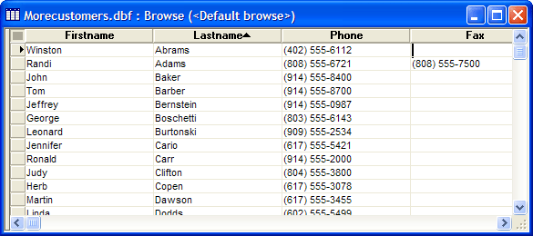

Reading Through a ResultSet
Suppose you have executed the following code that retrieves a SQL::ResultSet from the back-end database.
|
dim qry as C dim conn as SQL::Connection ? conn.open("{A5API=Access,FileName='C:\Program Files\a5v8\MDBFiles\Alphasports.mdb',UserName='Admin'}") = .T. qry = "SELECT FIRSTNAME, LASTNAME, PHONE, FAX FROM Customer WHERE (PHONE <> '') ORDER BY LASTNAME, FIRSTNAME" ? conn.execute(qry) = .T. |
Reading a Field Value
Let's use some of the SQL::ResultSet methods to look at the data. The .Data() method has 2 optional syntaxes. You can specify the column number. In this case we ask for column 1.
|
? conn.resultset.data(1) = "Winston" |
You can also specify the column name.
|
? conn.resultset.data("Firstname") = "Winston" |
This line retrieves the data in the phone field.
|
? conn.resultset.data("Phone") = "(402) 555-6112" |
To look at another row, you can jump directly to it with the .GoToRow() method. Remember, there is no guarantee that you can retrieve a lower number or prior row. A more common solution would be to step through the rows. To do this you use the .NextRow() method.
Stepping Through the ResultSet with .NextRow()
First, to simplify the coding, we will create a new SQL::ResultSet object to hold the contents of conn.resultset.
|
dim rs as SQL::ResultSet rs = conn.ResultSet |
If there is no more data to read, the .NextRow() method returns .F. (FALSE). This series of commands will display all the names found in the ResultSet.
|
while rs.nextrow() #ui_msg_box("Name", rs.data(1) + " " + rs.data(2)) #end while |
Retrieving the ResultSet to a Table
Perhaps the most convenient way to deal with a ResultSet is to retrieve it to an Alpha Five table. There are many optional arguments to the .ToDBF() method. The single required argument is a fully specified path and table name.
|
? conn.execute(qry) = .T. rs = conn.ResultSet ? rs.ToDBF("c:\MoreCustomers.dbf") = .T. |
After attaching the new table to the database and opening up the default browse, this is what you see.

Close the connection when you are finished.
|
conn.close() |
Limitations
Desktop applications only.
See Also
Working with SQL Databases, SQL::CallResult Object